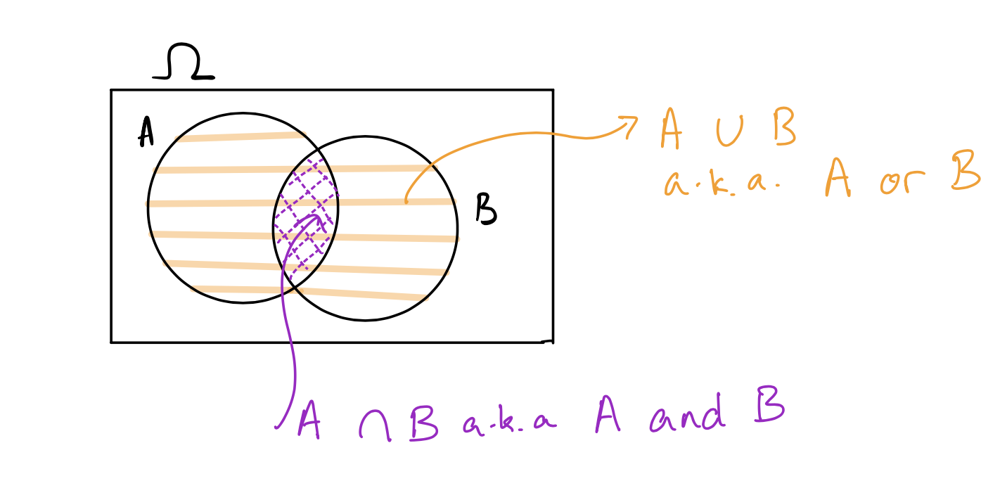
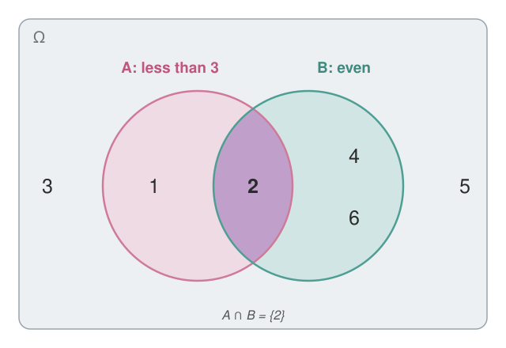
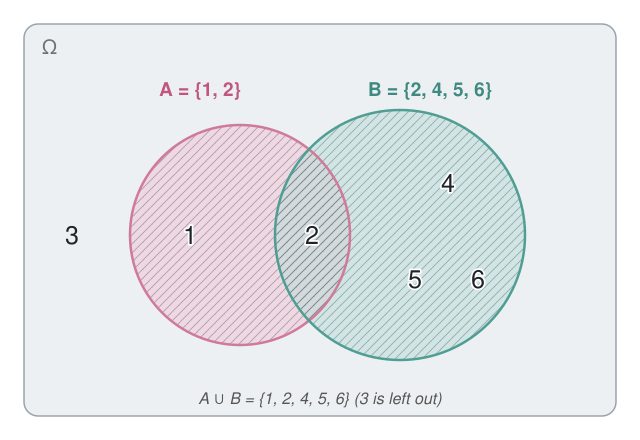
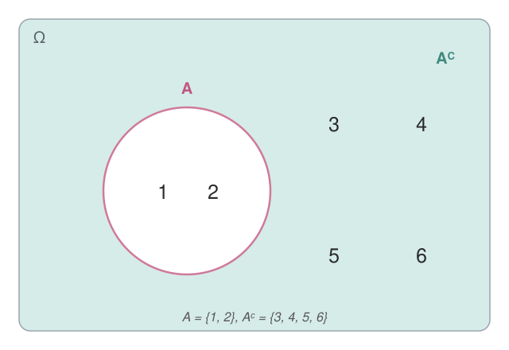
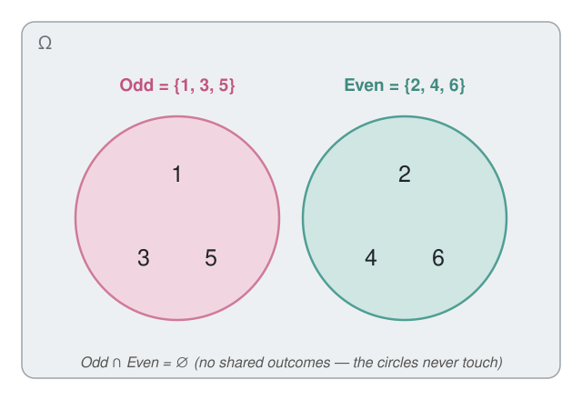
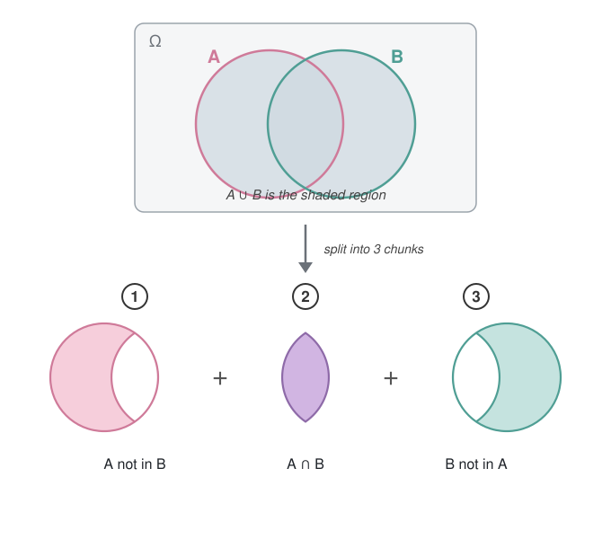
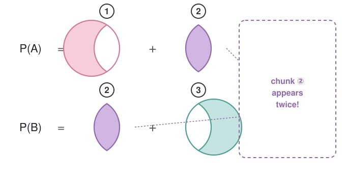
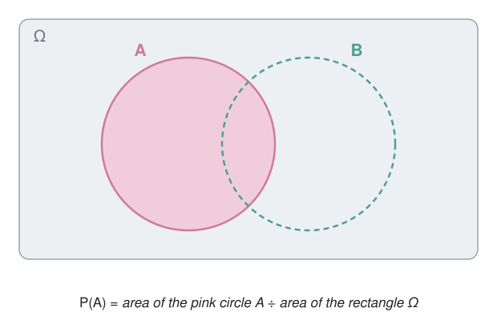
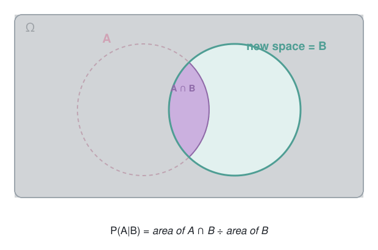

Number of simulations = 1000 prop_three_heads
1 0.32Building the rules of probability from scratch
So far in this course, we have considered summaries of datasets that are in front of us. We would like to get to the point where we can talk about data that we did not directly see. In order to do that, we must understand probability. Probability will allow us to generalize our data to unseen populations, look at causal relationships, and predict new outcomes. It lets us answer questions like: What does my survey of a few thousand people say about the whole population of the United States? How random is ``too random’’ in a new drug trial to tell if the effect is real or not? If I am going to predict a range of temperatures for tomorrow (Say 85-105 degrees), how wide should my range be to have a reasonable chance of being correct?
Many of us already have a colloquial understanding of probability. We see these terms tossed around and used all the time in daily life:
We can also make more precise statements about probabilities like:
These statements are all really asking the same question: what is probability? Probability has a mathematical definition and a set of rules that govern how it works. This is probability theory – the mathematics of randomness. We’ll need a few new terms.
What probability does is assign every event a number between zero and one, which is the probability of that event (note we write \(P(A) = 0.7\) to mean a 70% probability, we scale to be between 0 and 1). What this number means, however, is a rather philosophical choice – people have been debating for centuries what the ``meaning’’ of probability is. One of the most common interpretations, and the one taught in most introductory classes, is the frequentist interpretation of probability. If I run an experiment many, many times, the frequency with which an event occurs approaches the probability of that event. The probability of an event is the frequency if many, many trials were run.
I claimed that the probability of getting three heads out of five in five coin tosses is 31.25%. Let’s check this: R has code to simulate random numbers, so we can have R simulate 1000 instances of tossing five coins in a row, and see how many give exactly three heads.
Number of simulations = 1000 prop_three_heads
1 0.32You can see that the simulated proportion is close to 0.3125, matching the frequentist interpretation: as we run more and more trials, the observed frequency of three heads approaches the true probability.
So now we know what probability is, but how do we compute it? Before we get into the real meat of computing probabilities, we first have to understand the rules of how probability works. For example, if I know that the probability of it being sunny tomorrow is 70% and of it being hot tomorrow is 70%, what is the probability of it being sunny and hot? Do I add them up for 140%? Do I multiply them? Is it just 70% again?
We need rules for combining events, and this is a field of mathematics called set theory. In set theory, we study how to take two events and combine them into a new event. There are three main operations: and/intersection, or/union, and not/complement. We often look at these with a Venn diagram.
When considering how two events might relate to each other, we often use Venn Diagrams. The outcome space \(\Omega\) is represented as a rectangle containing all possible outcomes. Each event, as a subset of possible outcomes, is written as a ball inside the rectangle. There are different overlapping regions of the balls which have different names in set theory: the union, intersection, and complement.

Let’s continue with the outcomes of a die roll. Consider the event that the die is less than three, and the event that the die is even.
If \(A\) is the event that the die is less than three (\(A = \{1,2\}\)) and \(B\) is the event that the die is even (\(B = \{2, 4, 6\}\)), then the only outcome in both \(A\) and \(B\) is 2, so \(A \cap B = \{2\}\). In a Venn diagram, the intersection is the shared space of the two regions – it’s every outcome that exists in both sets.

For example, all die outcomes that are \(\{1,2\}\) or \(\{2,4,5,6\}\) gives \(\{1,2,4,5,6\}\). In a Venn diagram, this is the shading of both regions – any outcome that exists in either of the two sets.

For example, all die outcomes that are not 1 or 2 gives \(\{3,4,5,6\}\). The complement is everything shaded outside a set in a Venn diagram.

For example, the event that a die roll is odd and the event that a die roll is even are mutually exclusive. Or: the event that tomorrow’s max temperature is between 90 and 100 degrees, and the event that it’s between 110 and 120 degrees, are mutually exclusive – both cannot happen at once.

With these definitions in place, we can now understand the three rules of probability, called axioms (which is a fancy math word for rule).
All of probability theory follows from these three rules. However, there are useful consequences of them – sub-rules – that ultimately follow from the axioms but are useful enough to state on their own.
We have seen when two events are mutually exclusive, we know how to compute the probability of their union. What about intersections, and what about not mutually exclusive events?
For two mutually exclusive events, their intersection is the empty set so the probability of their intersection is 0.
For two non mutually exclusive events, we say that two events are independent if the probabilities for the second event remain the same even if you know that the first event has happened, no matter how the first event turns out. Otherwise, the events are said to be dependent. Independence has to be stated at the start of a problem as an assumption, we cannot “know” two events are independent unless someone tells us so.
If two events are independent, the probability of their intersection is the product of the probabilities,
\[P(A \cap B) = P(A) P(B)\quad\quad\quad\text{if A and B are independent}\] For two dependent events, there is no general way to know the probability of their intersection unless someone tells you, it is a property of the problem at hand that cannot be known before
\[P(A \cap B) = ???\quad\quad\quad\text{if A and B are dependent}\]
Let’s figure out how this equation works using our Venn diagrams. \(A \cup B\) is the shaded region of the two circles, and it can be broken down into 3 chunks:

Now think about what happens when we add up the area of \(A\) and the area of \(B\). The area of \(A\) is made of chunks ① and ②, and the area of \(B\) is made of chunks ② and ③. So when we compute \(P(A) + P(B)\), we double count the intersection: chunk ② (\(A \cap B\)) gets counted once inside \(A\), and again inside \(B\).

So \(P(A) + P(B)\) has one copy too many of the intersection. To get the right area, we have to subtract off one intersection:
\[P(A \cup B) = P(A) + P(B) - P(A \cap B)\]
Let’s look at an example that ties all of this together. What is the probability of getting at least 1 head in 3 flips of a coin? Assume all coin flips are independent and that the probability of a single coin flip being heads is 0.5.
The event here is \(A = \{\text{at least 1 head in 3 coin flips}\}\). Consider however the complement of \(A\), the opposite of getting at least 1 head is getting no heads– that is getting three tails in a row. Let’s use the complement sub-rule \[P(\{\text{at least 1 head in 3 coin flips}\}) = 1 - P(\{\text{3 tails in a row}\})\] Since we assume flips are independent, the probability of getting three tails is the product of the probability of getting a tail on the 1st, 2nd, and 3rd flip \[\begin{align*} P(\{\text{3 tails in a row}\}) &= P(\{\text{tail on flip 1}\} \cap \{\text{tail on flip 2}\} \cap \{\text{tail on flip 3}\})\\ &= P(\{\text{tail on flip 1}\})P(\{\text{tail on flip 2}\})P(\{\text{tail on flip 3}\})\\ &= (1/2)(1/2)(1/2)\\ &= 1/8 \end{align*}\] so, the probability of getting no heads is \(1/8\), so the probability of getting at least 1 head is \(1-1/8\) or \(7/8\).
Intersections allow us to answer the question: what is the probability of two events happening at the same time? Unions allow us to answer the question: what is the probability of either one or both of these events happening? However, there is another question we might ask. If I know for a fact that one event has occurred, does this change the probability of the other event occurring as well? This is called conditional probability.
Let’s look for example at our friends the Palmer penguins, here is the contingency table of the total penguin population, and then the proportions of each type. Recall the proportions in the middle are taking the counts and dividing by the total population, the bold numbers on the right hand side are the row sums divided by the total population, and the bold row on the bottom is the column sums divided by the total population.
| Biscoe | Dream | Torgersen | |
|---|---|---|---|
| Adelie | 44 | 55 | 47 |
| Chinstrap | 0 | 68 | 0 |
| Gentoo | 119 | 0 | 0 |
| Biscoe | Dream | Torgersen | ||
|---|---|---|---|---|
| Adelie | 0.132 | 0.165 | 0.142 | 0.439 |
| Chinstrap | 0.000 | 0.204 | 0.000 | 0.204 |
| Gentoo | 0.357 | 0.000 | 0.000 | 0.357 |
| 0.489 | 0.369 | 0.142 | 1.000 |
Imagine if I pick a penguin randomly from the population, based on this table there is a 20.4% chance I pick a Chinstrap penguin if each penguin is equally likely to be picked. However, what if I restrict myself to only picking penguins from the Dream island?
On Dream island, there are 123 penguins, 68 of which are Chinstrap. So if I condition on picking a penguin from Dream island alone, there is 68/123 = 55% chance of my picking a Chinstrap. So when I condition on Dream island, the conditional probability of picking a Chinstrap increases compared to the full population.
In probability theory, we have two events here
\[ P(A|B) = \frac{P(A \cap B)}{P(B)}\]
Let’s consider what this means with our Venn diagrams. The original probability of the event \(P(A)\) can be thought of as the area of the pink circle divided by the area of the rectangle.

If we condition on \(B\) being true, then our “space of possible outcomes” \(\Omega\) has reduced from the overall outer rectangle to just the inside of the circle \(B\), we know for a fact we now live inside of \(B\). If we live inside, \(B\), the part of \(B\) that is also \(A\) is the intersection, and the “whole space” is now just \(B\). So conditional probability is the area of the intersection slice divided by the area of \(B\), which is \(P(A \cap B)/P(B)\).

If we look at the contingency table of penguins, we can read \(P(A \cap B) = 0.204\) while \(P(B) = 0.369\) giving ratio \(0.204/0.369 = 0.553\) or 55.3% as I said above.
Conditional probability can be quite useful, as it allows us to “update” our probabilities once more information arrives at us. If I know the penguin in front of me is from Dream island, that changes my probability of what species it is.
We can also rearrange the equation to define the probability of the intersection in terms of the conditional probability,
\[ P(A \cap B) = P(B)P(A|B)\]
So, if someone told me “there is a 36.9% chance a penguin is from Dream island”, and “given a penguin is from Dream island there is a 55.3% chance it is a Chinstrap”, I can figure out the probability of a penguin being a Chinstrap and from Dream island is \[ P(A \cap B) = P(B)P(A|B) = (0.369)(0.553) = 0.204\] So sometimes, a problem will be stated in terms of conditional probabilities, and we can figure out the probability of an intersection from the given information.
Or, another example if there is a 50% chance it is sunny tomorrow, and the probability it is hot if it is sunny is 90%, then the probability it is hot and sunny is
\[P(\text{hot and sunny}) = P(\text{hot|sunny})P(\text{sunny}) = (0.9)(0.5) = 0.45\]
Conditional probability has an interesting interaction with independence. If events \(A\) and \(B\) are independent, then \(P(A|B) = P(A)\), having information about \(B\) does not change the probability of \(A\) occurring or not.
We covered quite a bit of ground today, and this is just scratching the surface of probability theory. Set theory forms the foundations of computing probabilities, so it is important to get comfortable with unions, intersections, and complements of various sets. Working with events that are either mutually exclusive or independent can be a useful tool in computing probabilities. Conditional probability changes the probability of different events occurring based on information we acquire about other events.
We will use today’s worksheet to practice working with set theory and computing probabilities of one event based on information about another event.